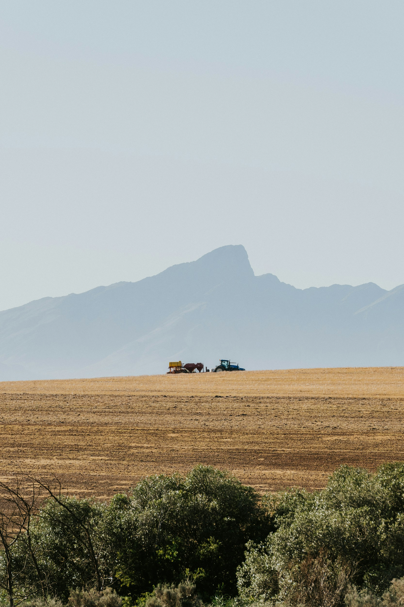
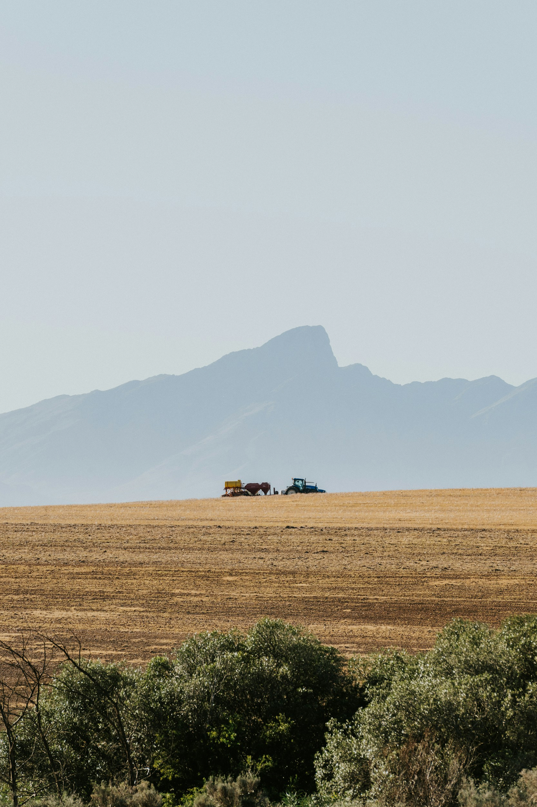
about us

 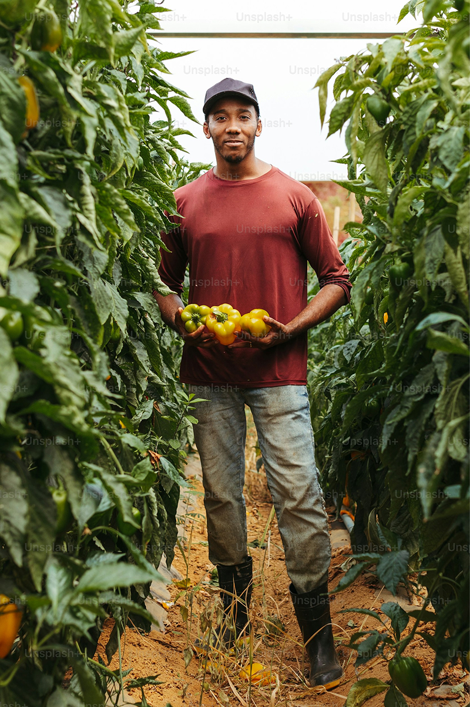
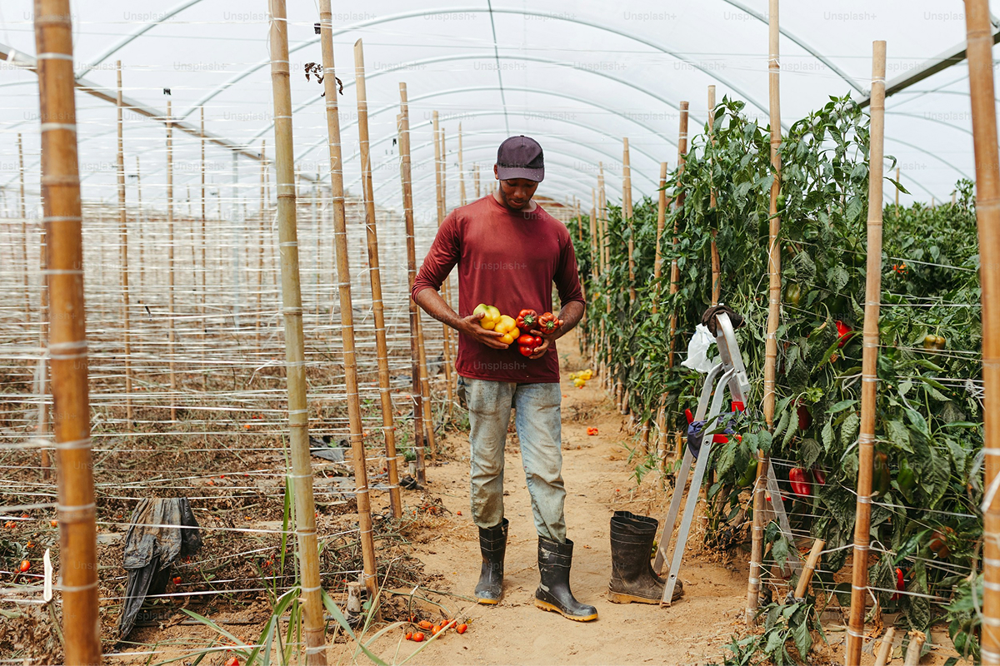
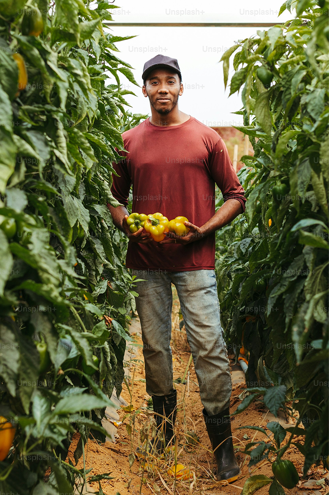
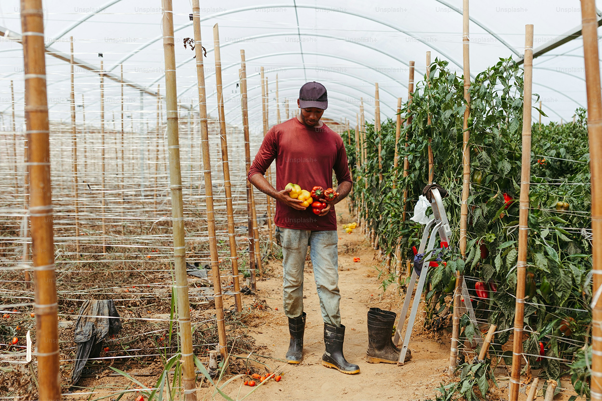


 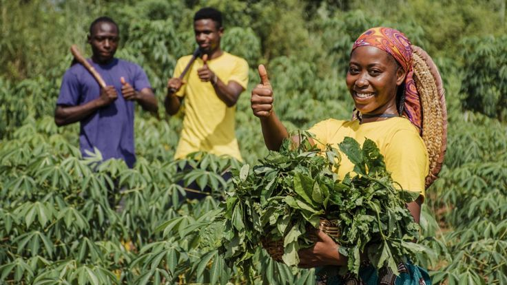
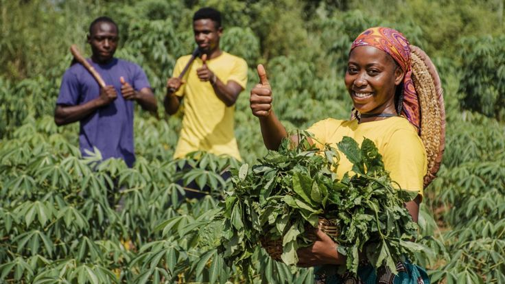

 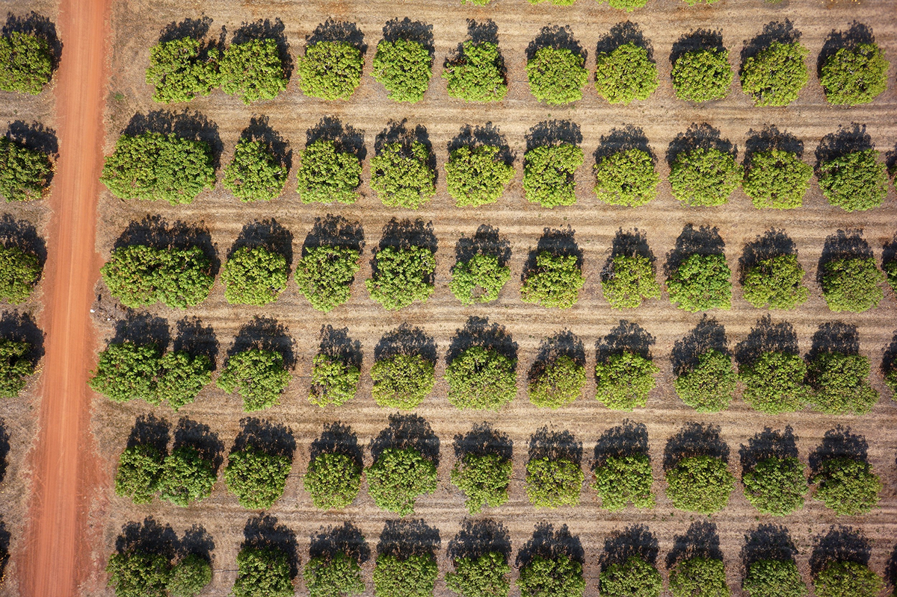
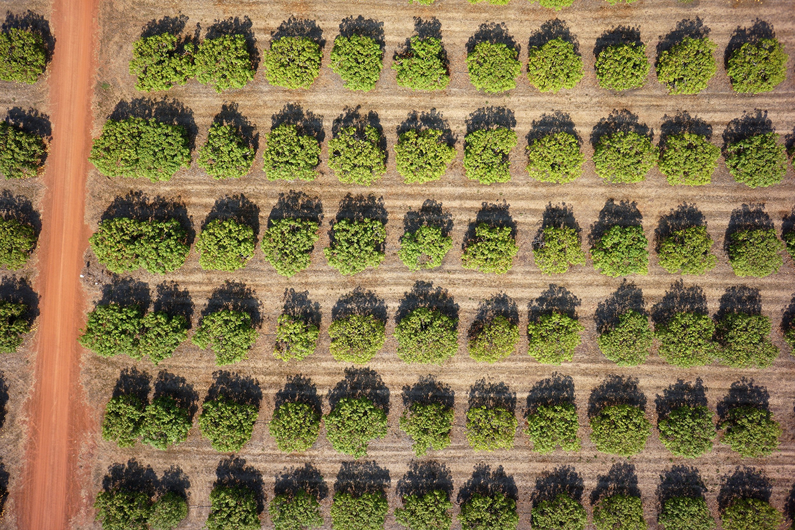

 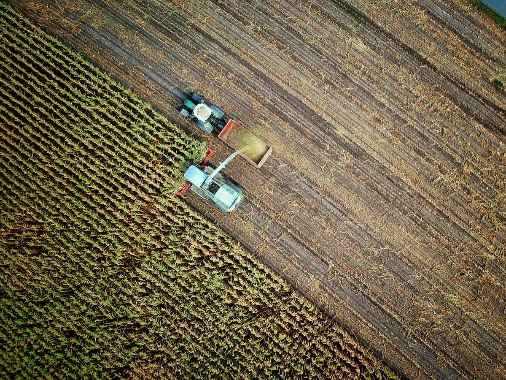
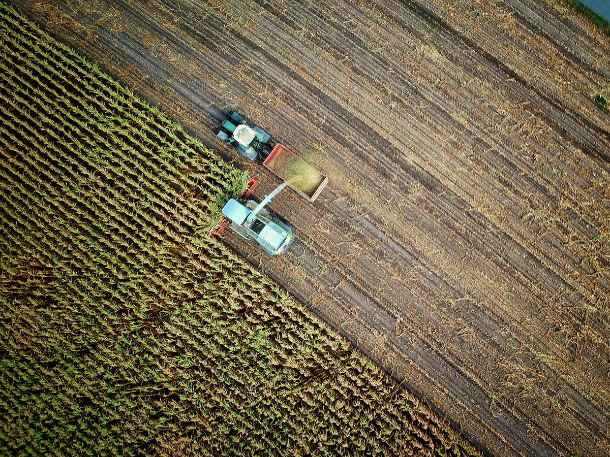

Our Mission: enhance productivity, promote environmental conservation, and unlock global market opportunities for Nigerian farmers by integrating cutting-edge technology, sustainable practices, and inclusive financial models, with a focus on the cocoa and cassava value chains.
FAAID, with 20 years of cross-industry experience in finance, manufacturing, and resources, leverages strategic partnerships with leading Chinese agricultural companies, research institutions, and global industry alliances to empower Nigerian agriculture.
Partners


Projects
Agritech Solutions
Smart agriculture leverages technologies such as IoT, big data, and artificial intelligence to intelligently manage agricultural production, improving efficiency, optimizing resource use, and enhancing sustainability.
Improving Crop Quality & Yield
Smart monitoring technology optimizes water and fertilizer management, increasing agricultural profitability.
Smart agriculture leverages intelligent monitoring technology to optimize water and fertilizer management, ensuring crops grow under ideal conditions. IoT sensors continuously track soil moisture, nutrient levels, and environmental data, while AI-powered analytics adjust irrigation and fertilization strategies in real-time to minimize waste and maximize yield. Additionally, drone inspections and pest warning systems enable early detection of crop issues, reducing losses. These innovations significantly enhance product quality and increase agricultural profitability.
Promoting Sustainable Development
Reduce pesticide use, conserve water resources, and support eco-friendly farming practices.
Smart agriculture is not only about boosting yields but also about fostering eco-friendly and sustainable growth. Precision fertilization and smart irrigation systems help reduce excessive use of chemical fertilizers and water waste, while biological pest control and AI-powered pest detection minimize pesticide usage, protecting soil and water health. Moreover, the promotion of regenerative farming practices, such as crop rotation and organic cultivation, improves soil fertility and ensures long-term agricultural sustainability. These strategies contribute to a healthier environment and a more resilient agricultural system.
Boosting Employment & Economic Growth
Create direct job opportunities, strengthen the agricultural value chain, and enhance export competitiveness.
The adoption of smart agriculture not only enhances efficiency but also creates new job opportunities. The shift towards digital and technology-driven agriculture generates demand for skilled workers in areas such as smart machinery operation, data analysis, and agricultural e-commerce. Additionally, smart agriculture upgrades the agricultural supply chain, stimulating growth in processing, logistics, and exports, which strengthens the overall agricultural economy. By modernizing management practices and expanding global market access, African agricultural products are becoming more competitive, contributing to economic development and long-term prosperity.
Agricultural Education
Empowering farmers through comprehensive education programs, digital skills training, and youth engagement initiatives to build a sustainable agricultural future.
Farmer Training Program
Enhance agricultural productivity by equipping farmers with modern techniques, sustainable farming methods, and business strategies.
The Farmer Training Program provides comprehensive training in sustainable farming practices (organic farming, soil health management, water conservation), modern agricultural machinery operation and maintenance, crop rotation & pest control best practices, and agricultural processing & market strategies. Our blended learning approach combines classroom instruction with field practice, supported by expert teams and cooperative development initiatives.

Digital Skills Workshop
Empowering farmers and youth with essential digital tools and knowledge for smarter farming and market expansion.
Our Digital Skills Workshop covers smart farming & data management (drone mapping, precision irrigation, digital monitoring), e-commerce & online sales strategies, digital finance & agricultural loans, and basic computer skills. Through tech-enabled learning facilities and corporate partnerships, we offer flexible training options both online and offline to ensure accessibility.

Youth in Agriculture
Attracting and equipping young people with skills and resources to build sustainable careers in agriculture.
The Youth in Agriculture Program focuses on agricultural entrepreneurship, smart agriculture & emerging technologies, supply chain & market integration, and policy & financial support. Through agricultural startup hubs, innovation challenges, and university collaborations, we provide comprehensive support for young people to develop successful careers in modern agriculture.
Latest News

AGCO Agriculture Foundation Launches Call for Applications for Grant Cycle
The AGCO Agriculture Foundation announces its latest grant cycle, focusing on sustainable farming practices and technological innovation in African agriculture. This initiative aims to support projects that enhance food security and agricultural productivity across the continent.
Oct. 1, 2024
Sustainable Agriculture Initiative Expands to New Regions
The sustainable agriculture program has successfully expanded to five new regions, bringing innovative farming practices and support to local communities.
Sep. 28, 2024Digital Innovation in Agriculture: A New Partnership
A groundbreaking partnership between tech firms and agricultural organizations promises to revolutionize farming practices through digital innovation.
Sep. 25, 2024
Youth in Agriculture: New Training Program Launched
An innovative training program targeting young farmers has been launched, focusing on modern agricultural techniques and sustainable farming practices.
Sep. 20, 2024
Agricultural Technology Summit 2024: Key Takeaways
The recent Agricultural Technology Summit brought together industry leaders to discuss the future of farming, highlighting key innovations and trends.
Sep. 15, 2024Sustainable Farming Practices: Research Results Released
New research findings demonstrate the positive impact of sustainable farming practices on crop yields and environmental conservation.
Sep. 10, 2024